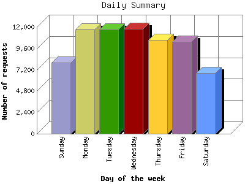

The Daily Summary identifies the level of activity as a total for each day of the week. This summary also compares the level of activity on weekdays and weekends as a total for the report time frame.

| Day of the week | Number of requests | Number of page requests | |
|---|---|---|---|
| 1. | Sunday | 7,980 | 4,841 |
| 2. | Monday | 11,756 | 6,000 |
| 3. | Tuesday | 11,713 | 5,973 |
| 4. | Wednesday | 11,803 | 5,863 |
| 5. | Thursday | 10,533 | 5,522 |
| 6. | Friday | 10,350 | 5,857 |
| 7. | Saturday | 6,850 | 4,375 |
| Total Weekdays | 56,155 | 29,215 | |
| Total Weekend | 14,830 | 9,216 | |
This report was generated on February 10, 2008 02:18.
Report time frame December 10, 2001 23:14 to February 10, 2008 01:40.